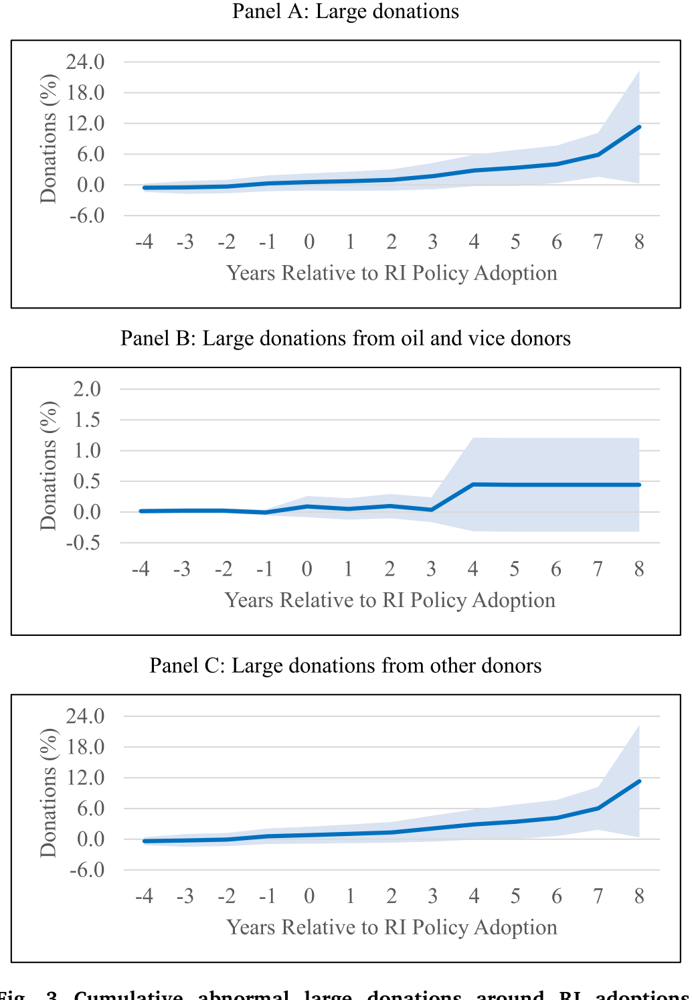
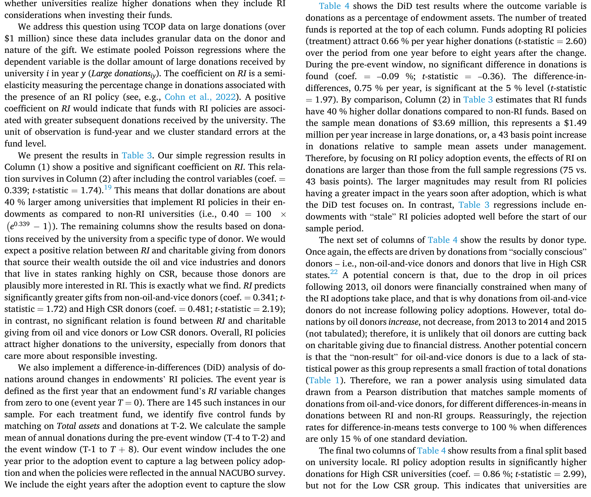
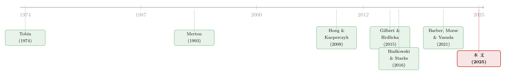

良心是有价的：当大学捐赠基金为「责任投资」买单，谁来付账？
本文读的是 Aragon, Jiang, Joenväärä & Tiu (2025, Journal of Financial Economics)：大学捐赠基金采纳「责任投资」政策，会拉低投资业绩、抬高管理成本，却换来了相当于基金资产 12% 的异常大额捐赠。责任投资不是慈善，也不是作秀，而是大学与其利益相关者之间「最优契约」的一部分——投资上的让步，被捐赠这笔「非投资收入」补了回来。
1 一个看似亏本的买卖
先把一个再朴素不过的常识摆在桌面上：把投资范围限制住，业绩通常会变差。
这几乎是金融学的第一性原理。你不让一只基金碰石油股、烟草股、军火股，它的可投资集合（investment opportunity set）就被人为缩小了，分散化收益受损，组合波动率上升，长期回报大概率被拖累。学术界为这件事吵了几十年，从「罪恶股票」的超额收益（Hong and Kacperczyk, 2009），到撤资究竟要付出多大代价（Cornell, 2015），结论虽不完全一致，但「约束有成本」这个方向上，多数证据是站得住的。
那么问题就来了。
大学捐赠基金（university endowment）——这些管理着合计 $874 billion（2024 年）资产、为科研与教学输血的长期机构投资者——本该是最在乎长期回报的一类人。它们的受托人按照托宾（Tobin, 1974）的说法，肩负着「在世世代代的利益相关者之间公平守护本金」的使命。按理说，这样的投资者最没有理由主动给自己套上枷锁。
可现实是，它们偏偏越来越多地套上了这副枷锁。在本文的样本里，采纳责任投资（responsible investment, RI）政策的捐赠基金比例，从 2009 年的 30% 一路升到 2017 年的 46%；到 2017 年，采纳 RI 的捐赠基金资产合计高达 $224 billion。

Figure 3: Cumulative abnormal large donations around RI adoptions
这就是这篇论文要解开的那个张力：如果责任投资是一桩亏本的买卖，为什么有近一半、而且是越来越多的大学捐赠基金，心甘情愿地去做？
2 先问「谁在做」——责任投资的横截面画像
要回答「为什么」，作者的第一步不是急着去算业绩，而是先问一个更朴素的问题：到底是哪些大学，更倾向于采纳 RI？
他们用的是美国全国大学与学院商务官协会（National Association of College and University Business Officers, NACUBO）的捐赠基金调查数据。这套数据从 2009 年起开始在「社会投资标准」一栏里询问受访者是否从事责任投资活动——这正是样本期从 2009 年开始的原因。作者据此构造了一个核心指标 RI：只要该基金从事任何 RI 相关活动（筛选、参与、或其他），就取 1，否则取 0。样本共 1004 家捐赠基金，覆盖 2009–2017。
接着，一个自然的问题是：什么样的大学会承受最大的「采纳压力」？作者的处理很巧妙。NACUBO 从 2014 年起，会问每所大学：是哪些利益相关者群体要求把 RI 纳入捐赠基金？又是哪一类 RI 考量？群体有六类（学生、校友、雇员、捐赠人、资助机构、其他），考量有五类（ESG、SRI、撤资、影响力投资、其他）。作者把这 6 × 5 = 30 个「群体—类型」指标相加，构造出主变量「利益相关者压力」(Stakeholder pressure)，理论上从 0（没人施压）取到 30（六类群体对五类考量全部施压）。
横截面的结论清晰得近乎直白。RI 政策更常见于：(i) 面临明确的利益相关者施压、尤其是来自学生与捐赠人的大学；(ii) 有宗教背景的大学；(iii) 位于企业社会责任 (corporate social responsibility, CSR) 排名靠前的州的大学。更关键的一点是——当捐赠在大学预算中占比越大、大学越依赖捐赠来维持运转时，RI 政策就越普遍。
这个发现本身就埋下了伏笔：会做责任投资的，恰恰是那些「输不起捐赠人」的大学。
作者还做了一个漂亮的「验真」练习：他们在 Nexis Uni 数据库里检索大学撤资新闻，5548 篇文章中有 445 篇与化石燃料撤资有关。NACUBO 口径的 RI 采纳数，与新闻里的撤资公告数，样本相关系数高达 51%，且都在 2013–2014 年出现尖峰。这说明 NACUBO 的 RI 不是纸上的勾选，而是真有撤资行动在背后。
3 真正关键的一步：捐赠会补回来吗？
横截面只能告诉我们「谁在做」，却不能告诉我们「做了之后发生了什么」。于是论文真正关键的一步来了——把视角从「谁采纳」切换到「采纳前后」。
作者引入了慈善纪事报 (The Chronicle of Philanthropy, TCOP) 的大额捐赠数据：每一笔不低于 $1 million 的捐赠，都附带捐赠人的姓名、所在地与财富来源。把它和 NACUBO 的投资政策数据合并后，作者对 145 家在样本期内「采纳了 RI」的处理组捐赠基金，做了一个双重差分 (difference-in-differences, DiD) 分析。
设计的逻辑是这样的：以一所大学「采纳 RI 的那一年」为事件时点，比较它在采纳前后获得的大额捐赠，相对于一组未改变 RI 状态的可比大学的差异。这样,被时间趋势、被大学固有特征所解释的那部分捐赠变化就被差掉了，剩下的就是「采纳 RI」这一事件本身关联的「异常捐赠」(abnormal donations)。
结果是这篇论文的命脉所在：采纳 RI 之后的八年里，大学累计获得的异常大额捐赠，相当于其捐赠基金资产的 12%（图 3 的 Panel A）。而且这笔钱不是一次性的脉冲，而是在采纳后好几年里持续地流入——作者解释说，大额捐赠从谈判到落定本就旷日持久，这种持续性恰恰说明这些捐赠是「永久性」的而非「临时性」的。
更妙的是异质性。这笔异常捐赠主要来自「更具社会良知」的捐赠人（图 3 的 Panel C）——作者用「捐赠人是否住在高 CSR 州」「财富是否来自能源、博彩、国防之外的行业」来识别这类人；而所谓「石油与罪恶」(oil and vice) 捐赠人贡献的异常捐赠则不显著（Panel B）。换句话说，钱是从「在乎」的人那里来的。
那么，会不会是因果倒置——是大学先嗅到捐赠要来了，才顺势宣布 RI？作者做了安慰剂检验 (placebo test)：没有证据显示异常捐赠出现在 RI 采纳之前。捐赠跟在采纳之后，而非之前。

Table 4: shows the DiD test results where the outcome variable is
除了捐赠，作者还顺着同一套逻辑检验了学生申请：RI 政策确实能预测更多的学生申请，但只在较小的捐赠基金里成立。无论是捐赠还是申请，效应都在「气候变化关注度」高的时期最强——作者沿用 Ardia et al. (2023) 的媒体气候变化关注 (Media Climate Change Concerns, MCCC) 指数来度量这种时变情绪，并把它与 RI 政策做交互。一个有意思的细节是：哪怕 RI 政策是很久以前采纳的，只要赶上社会对气候议题热度高涨的年份，捐赠依然会更高。
4 于是反转出现：成本这一边
讲到这里，故事似乎太美好了——做责任投资，钱反而更多。但论文的诚实之处，恰恰在于它没有停在这里，而是认真去算了账的另一边：成本。
第一步是先确认「RI 是真做了，不是嘴上说说」。捐赠基金的持仓明细并不公开，作者就用组合收益去反推它对石油与罪恶行业的暴露。结果，RI 基金的「石油 beta」(oil betas) 比非 RI 基金低了整整 50%。他们还把 DiD 框架用到「政策组合权重」(policy portfolio weights) 上：一家基金在改变 RI 状态前后，其政策组合的相似度显著下降。结论是——RI 反映的是投资实践上实打实的差异，不是「廉价的空话」(cheap talk)。
第二步才是真正的成本。作者发现，RI 捐赠基金有显著更高的管理成本和显著更高的收益波动率。这与「约束缩小可投资集合、损害分散化」的理论预期完全吻合，也间接印证了 RI 约束确实拖累了组合表现。
但最画龙点睛的一笔在最后：当作者把视角拉到「总资产增长」——也就是捐赠 + 扣费后投资收益这个综合口径时，RI 与非 RI 基金之间，在基准调整后的资产增长上没有显著差异。
一边是被拖累的投资收益与更高的成本，另一边是被补回来的慈善捐赠。两边一抵，大学的整体「钱袋子」并没有变瘪。
5 一个核心：责任投资是「补偿性差异」
到这里，所有线索可以收束到一个核心概念上——补偿性差异 (compensating differential)。
把捐赠基金的管理者想象成一个签合同的人。他面对的不只是市场，还有一群手握「非投资收入」（主要是捐赠）的利益相关者。如果这群人的偏好更具社会良知，那么管理者采纳 RI 政策，就是在用「投资业绩上的让步」去换「捐赠上的回报」。投资端的拖累，被非投资收入这个「补偿性差异」对冲掉了。
反过来，如果利益相关者并不那么在乎 RI、且大学更依赖投资收益来维持运转，那么管理者就会选择「低约束」的安排——不采纳 RI。
这就解释了开篇那个张力：责任投资看起来是亏本买卖，但只对「错的大学」才亏本。对那些利益相关者高度重视 RI、且高度依赖捐赠的大学来说，它是一笔划算的交易。论文据此把 RI 政策刻画为大学与其利益相关者之间最优契约 (optimal contract) 的一个组成部分。
作者特别强调：他们不主张 RI 与捐赠之间存在因果关系，也不主张「随便哪所大学自发采纳 RI 都能增加捐赠」。会采纳 RI 的本就是那些 RI 敏感型利益相关者占比更高的大学。这是一个关于「最优契约内生选择」的故事，而非「政策处方」。这份克制，恰恰是这篇论文最让人信服的地方。
这其实呼应了 Hart 和 Zingales (2017) 的观点——企业（或机构）应当与其投资者的偏好对齐，尤其是长期投资者。捐赠基金正是「长期」二字的典范。
6 文献脉络
把这篇论文放回它生长的土壤里，脉络就清楚了。
最早，是把捐赠基金当成大学整体目标一部分来思考的传统：托宾 (Tobin, 1974) 追问「什么才是永久的捐赠收入」，默顿 (Merton, 1993) 进一步指出，像捐赠这样的非投资收入本质上是对可交易资产的隐性投资，会反过来影响捐赠基金该如何配置——如果捐赠和股市正相关，捐赠基金就该少配甚至做空股票。Gilbert 和 Hrdlicka (2015) 则解释了为什么大学捐赠基金「又大又敢冒险」：当捐赠本身有风险时，捐赠基金扮演着预防性储蓄的缓冲垫。

另一条线，是责任投资本身的实证大潮。Hong 和 Kacperczyk (2009) 量出了「罪恶股票」的溢价——把它们排除在外是有代价的。Bialkowski 和 Starks (2016) 记录了共同基金行业 RI 的迅猛增长；Hartzmark 和 Sussman (2019) 用一场自然实验证明投资者真的「在乎」可持续性，会用资金流投票；Barber, Morse 和 Yasuda (2021) 则发现影响力投资者愿意主动接受更低的财务回报。
这篇论文恰好站在两条线的交汇处：它把「捐赠基金作为大学整体一部分」的老问题，和「责任投资有成本也有需求」的新证据接在了一起，第一次刻画出 RI 政策与「对非营利机构的捐赠」之间的关系。
（关于 ESG 资金到底「倾斜」了多少，可参见《三万五千亿美元的 ESG，到底「倾斜」了多少？》；关于可持续投资如何抬高治理成本的一面，可参见《良心、价格与监督：可持续投资如何悄悄抬高了治理成本》；至于「绿色标签」在信贷市场里值多少钱，可参见《给「绿色」贴个标签，到底值多少钱？》。）
7 评论与延伸（Q&A + 研究方向）
(a) 几个可能的疑问
Q：这到底是不是因果？12% 的异常捐赠能当成「采纳 RI 带来的回报」吗？
严格说不能，作者自己也明确拒绝因果解读。DiD 加安慰剂检验排除了「捐赠预先就涨」的反向因果，但没法排除「某个共同的潜在变量」——比如大学某届领导班子既更进步、又更善于募款——同时驱动了 RI 采纳和捐赠增长。把它读成「RI 与捐赠在最优契约里被一起选择」，比读成「RI 导致捐赠」要稳妥得多。
Q：交错采纳 (staggered adoption) 的 DiD，近年被质疑得很厉害，这篇逃得过吗？
这是个真问题。145 家处理组在不同年份采纳 RI，正是 Baker, Larcker 和 Wang (2022) 所警告的「交错 DiD 双向固定效应估计可能有偏」的典型场景。论文（在参考文献里）引用了这篇方法论文，说明作者是知情的；但样本仅九年、处理组规模有限，异质性处理效应能在多大程度上污染估计，仍值得读者保留一分警惕。
Q：管理成本更高、波动率更高，为什么不能直接说「RI 拖累了业绩」？
因为只有九年数据，要对「业绩」下定论太难——回报的信噪比极低，九年根本不够把 alpha 从噪声里拣出来。作者很克制，只说「成本更高、波动更大」提供了「业绩受损」的间接证据，而把真正的落脚点放在「总资产增长无差异」这个更稳健的综合口径上。
Q：为什么学生申请的效应只在小型捐赠基金里出现？
一个合理的解释是边际效应递减：顶尖大藤校本就申请爆满，RI 这点「加分」淹没在巨大的申请池里；而对中小型院校，一个鲜明的环境立场可能是吸引边际申请者的有效差异化手段。论文报告了这一异质性，但没有深挖机制，这恰是后续可做的地方。
Q：「利益相关者压力」变量从 2014 年才有，会不会限制了识别？
会。这个
0–30的压力指标只覆盖 2014 年及以后，因此它主要用在横截面「谁采纳」的刻画上，而非贯穿全样本的事件分析。好在作者用了多个替代度量（压力群体数、压力虚拟变量、分群体虚拟变量）来交叉验证，缓解了单一变量口径的脆弱性。
Q：这和共同基金、对冲基金里的 RI 研究比，新意在哪？
新意在「捐赠的对象是非营利机构」这个独特设定。共同基金里，投资者用资金流表达偏好（Hartzmark and Sussman, 2019）；而捐赠基金这里，利益相关者用「慈善捐赠」表达偏好——这是一种全然不同的、且此前未被记录过的「需求」渠道。把社会偏好的回报，从「资金流」推广到「捐赠流」，是这篇论文的独到贡献。
(b) 几个可能的研究问题与提案
-
责任投资约束如何外溢到捐赠基金的公司债配置？ 【经济故事】撤资讨论几乎都聚焦股票，但捐赠基金也持有大量固定收益。若 RI 约束延伸到信用市场（剔除高碳排放发行人的债券），可能改变这些债券的需求结构与流动性。 【可行性】中。需要捐赠基金层面的债券持仓（NACUBO 仅有政策组合权重，明细缺失），可考虑用 13F 之外的机构债券持仓数据或基金代持渠道近似；识别上可借用本文的 RI 采纳事件做 DiD。数据是主要瓶颈。
-
「社会良知型」捐赠人是否同时改变了其个人投资组合？ 【经济故事】本文证明这类捐赠人会多捐给 RI 大学；一个自然延伸是，他们在自己的财富管理上是否也偏好 ESG 资产？若是，则「偏好」是一致的人格特质，而非情境性的。 【可行性】中偏低。需把 TCOP 捐赠人姓名与个人投资账户/基金持仓匹配，匹配率与隐私是硬约束；或退一步用「捐赠人所在州的 ESG 基金资金流」做生态相关性，识别较弱。
-
气候媒体关注的「时变」能否用作更干净的识别？ 【经济故事】本文已用 MCCC 指数做交互，发现旧 RI 政策在高关注期也能多收捐赠。可进一步把高频的气候新闻冲击当作准外生的需求 shock，检验捐赠对「情绪」的弹性。 【可行性】高。MCCC 指数（Ardia et al., 2023）公开可得，TCOP 捐赠有日期，可做事件窗口或高频面板回归，识别相对干净，doable。
-
RI 采纳是否改变了捐赠基金的对外借款与发债行为？ 【经济故事】许多大学发行免税债为校园项目融资，债券投资者可能对大学的 ESG 立场定价。RI 采纳或许能降低其发债成本（绿色溢价的一种），从而构成 RI 的又一项「隐性收益」。 【可行性】中。需把 NACUBO 的 RI 状态与市政债/高校债发行数据（如 Bloomberg、EMMA）匹配，用 RI 采纳前后的发行利差做 DiD；样本量取决于发债大学的覆盖度。
-
「总资产增长无差异」是否掩盖了风险维度的差异？ 【经济故事】本文比的是均值意义上的资产增长，但 RI 基金波动率更高。若把分布的尾部也纳入，RI 大学在危机年份的资金链是否更脆弱？这关乎大学财务韧性。 【可行性】高。NACUBO 面板已含波动率与资产增长，可直接做条件分位数回归或考察 2008/2020 等冲击年份的横截面差异，数据现成，doable。
8 我的判断
这是一篇「问题好、设计稳、姿态诚实」的论文。它最大的贡献不在某个炫目的系数，而在于把一个看似矛盾的现象——长期投资者主动给自己套枷锁——纳入了一个干净的「最优契约」框架，并用 12% 的异常捐赠把契约的「补偿」那一边量化了出来。尤其难得的是它把账算全了：投资端的成本、捐赠端的收益、以及两端相抵后的总资产增长。多数 RI 研究只算一边，这篇算了两边。
对识别的担忧主要有三。其一，交错采纳的 DiD 在异质性处理效应下可能有偏，九年短样本又放大了这种脆弱性。其二，「采纳 RI」是高度内生的自选择，所有结果都该读作「相关」而非「因果」——这一点作者很坦白，但读者容易在传播中把它读丢。其三，捐赠基金持仓不公开，「石油 beta 低 50%」是从收益反推的，对模型设定有依赖。
后续我最想看到的，是把这套「社会偏好 → 非投资收入」的逻辑搬到信用市场去：如果说股票市场里投资者用资金流投票、捐赠市场里捐赠人用慈善投票，那么在公司债与高校债市场里，债券投资者会不会用「利差」为机构的 ESG 立场定价？那将是把本文的「补偿性差异」从慈善延伸到融资成本的一块拼图。
参考文献
Aragon, G. O., Jiang, Y., Joenväärä, J., & Tiu, C. I. (2025). Responsible investing: Costs and benefits for university endowment funds. Journal of Financial Economics 172, 104151.
Ardia, D., Bluteau, K., Boudt, K., & Inghelbrecht, K. (2023). Climate change concerns and the performance of green vs. brown stocks. Management Science 69, 7607–7632.
Baker, A. C., Larcker, D. F., & Wang, C. C. (2022). How much should we trust staggered difference-in-differences estimates? Journal of Financial Economics 144, 370–395.
Barber, B. M., Morse, A., & Yasuda, A. (2021). Impact investing. Journal of Financial Economics 139, 162–185.
Bialkowski, J., & Starks, L. T. (2016). SRI funds: Investor demand, exogenous shocks and ESG profiles. (Working paper; cited for RI growth in the mutual fund sector.)
Cornell, B. (2015). The divestment penalty: Estimating the costs of fossil fuel divestment to select university endowments. Working Paper, SSRN.
Gilbert, T., & Hrdlicka, C. (2015). Why are university endowments large and risky? Review of Financial Studies 28, 2643–2686.
Hart, O., & Zingales, L. (2017). Companies should maximize shareholder welfare not market value. Working Paper, SSRN.
Hartzmark, S. M., & Sussman, A. B. (2019). Do investors value sustainability? A natural experiment examining ranking and fund flows. Journal of Finance 74, 2789–2837.
Hong, H., & Kacperczyk, M. (2009). The price of sin: The effects of social norms on markets. Journal of Financial Economics 93, 15–36.
Merton, R. C. (1993). Optimal investment strategies for university endowment funds. In Clotfelter, C. T., & Rothschild, M. (Eds.), Studies of Supply and Demand in Higher Education. University of Chicago Press, pp. 211–242.
Tobin, J. (1974). What is permanent endowment income? American Economic Review 64, 427–432.